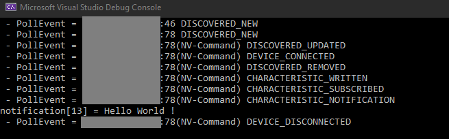

Simple Dynamic Linked Library (DLL) allowing to communicate with bluetooth devices. Initially created for Unity.
This project is based on UWP BLE API.
Features
- Continuous device advertisment scan
- Connect Bluetooth devices
- Disconnect Bluetooth devices
- Write data to characteristics
- Subscribe / read from characteristics
- Poll or Callback on event
- Detect if device is disconnected (lost)
- Check if the device is bluetooth enabled
- Error management
How to use
The interface is done in C#, you can easily translate to any other language.
Copy BluetoothLowEnergyApiTest/BleApi.cs and BluetoothLowEnergyApiTest/BluetoothLowEnergyApi.dll, and use the BleApi class as static to interface with bluetooth devices (sample code available in BluetoothLowEnergyApiTest/Program.cs) used in Test section
Code
Events
When polling data events we gather two variables : Who (struct Device) and What (enum What), who as the device responsible for this event and what the kind of event trigerred, you can find the list of events below:
enum What
{
LIBRARY_ERROR,
LIBRARY_NOTHING,
LIBRARY_CALLBACK_SETUP,
DISCOVERED_STARTED,
DISCOVERED_STOPPED,
DISCOVERED_NEW,
DISCOVERED_UPDATED,
DISCOVERED_LOST,
DISCOVERED_REMOVED,
DEVICE_CONNECTED,
DEVICE_DISCONNECTED,
DEVICE_LOST,
CHARACTERISTIC_SCAN_NEW,
CHARACTERISTIC_SCAN_OVER,
CHARACTERISTIC_WRITTEN,
CHARACTERISTIC_NOT_WRITTEN,
CHARACTERISTIC_READED,
CHARACTERISTIC_NOT_READED,
CHARACTERISTIC_SUBSCRIBED,
CHARACTERISTIC_NOT_SUBSCRIBED,
CHARACTERISTIC_UNSUBSCRIBED,
CHARACTERISTIC_NOT_UNSUBSCRIBED,
CHARACTERISTIC_NOTIFICATION
};
Structures
{
}
{
}
{
}
{
}
A characteristic.
Definition: BluetoothLowEnergyApi.h:101
bool isService
True if is service, false if not.
Definition: BluetoothLowEnergyApi.h:103
wchar_t uuid[50]
The uuid[ 50].
Definition: BluetoothLowEnergyApi.h:105
A data.
Definition: BluetoothLowEnergyApi.h:115
uint16_t size
The size.
Definition: BluetoothLowEnergyApi.h:119
uint8_t buf[512]
The buf[ 512].
Definition: BluetoothLowEnergyApi.h:117
Structures.
Definition: BluetoothLowEnergyApi.h:87
uint64_t address
The address.
Definition: BluetoothLowEnergyApi.h:89
wchar_t name[50]
The name[ 50].
Definition: BluetoothLowEnergyApi.h:91
An event.
Definition: BluetoothLowEnergyApi.h:129
What what
The what.
Definition: BluetoothLowEnergyApi.h:131
Data data
The data.
Definition: BluetoothLowEnergyApi.h:137
Characteristic characteristic
The characteristic.
Definition: BluetoothLowEnergyApi.h:135
Device who
The who.
Definition: BluetoothLowEnergyApi.h:133
Interface functions
static bool PollEvents(ref
Event ev);
static void SetEventCallback(CallbackEvent callback);
static void RemoveEventCallback();
static bool IsBluetoothEnabled();
static void StartDeviceScan();
static void StopDeviceScan();
static void CleanAdvertisedDevices();
static void AddAdertisementFilter(byte key, byte[] data, byte len);
static void RemoveAdertisementFilter(byte key);
static void RemoveAdertisementFilters();
static bool SetAdvertisementDeviceLostTimeout(Int32 timeout_ms);
static void ConnectDevice(UInt64 deviceAddress);
static void DisconnectDevice(UInt64 deviceAddress);
static bool IsDeviceConnected(UInt64 deviceAddress);
static void DisconnectAll();
static Int16 ConnectedCount();
static void DeviceWrite(UInt64 deviceAddress,
string uuid, ref
Data data);
static void DeviceRead(UInt64 deviceAddress, string uuid);
static void DeviceSubscribe(UInt64 deviceAddress, string uuid);
static void DeviceUnSubscribe(UInt64 deviceAddress, string uuid);
void Clean();
Build
There is a prebuild dll included BluetoothLowEnergyApiTest/BluetoothLowEnergyApi.dll. You also build it yourself by following these steps :
- Open the solution file BluetoothLowEnergyApi.sln with VisualStudio (tested with Community 2019). You may be asked install VisualStudio components when you open the project. The needed components are C++ Desktop and UWP.
- Choose configuration "Release" and "x64" (to match your machine architecture).
- In the project explorer, right-click the project "BluetoothLowEnergyApi" and choose "Compile".
- Wait until the compilation finishes successfully.
Now you find the file BluetoothLowEnergyApi.dll in the folder x64/Release. You can copy this dll where you need it. It also automatically copy the dll in BluetoothLowEnergyApiTest/
Test
The BluetoothLowEnergyTest project depends on the BluetoothLowEnergy and will be built automatically if there is any change in the dll, it allows to quickly test changes.
To test the API follow these steps :
- Open the solution file BluetoothLowEnergyApi.sln with VisualStudio. You may be asked install VisualStudio components when you open the project. The needed components are C++ Desktop and UWP.
- Set BluetoothLowEnergyApiTest as Startup Project (right click -> Set as Startup Project)
- Choose configuration "Release" and "x64"
- Compile and run, F5 (with debugger) or Ctrl+F5 (without debugger)
- Wait until the compilation finishes successfully and the program to run.
string devName = "NV-arm";
string UART_RX = "{6e400002-b5a3-f393-e0a9-e50e24dcca9e}";
string UART_TX = "{6e400003-b5a3-f393-e0a9-e50e24dcca9e}";
Important Note : The Characteristics need to be surrounded with braces : {}
This Test program is looking for a device devName to write and subscribe to the characteristics UART_TX and UART_RX. When started it will tell the user if the bluetooth is ready to be used (available + enabled), start scanning the devices, connect, write and subscribe, and show de notification data string in the console. When the first notification is recieved it disconnect the device and close the program, Otherwise you can cancel with Ctrl+C (will disconnect and exit).
If the device is lost, it will automatically reconnect when available.
Issues
Please feel free to submit issues with any bugs or other unforseen issues you experience. If you experience problems, open an issue describing the problem and how to reproduce it, and I'll be sure to take a look at it.
Licence
MIT
Author
Arrol - arrol.fr
 1.9.1
1.9.1